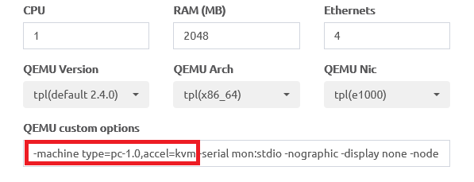

第一篇挫折紀錄，通篇鬼打牆… 原本想在EVE-NG上做個簡單的LAB，沒想到問題還真不少…
首先使用的是官網下載的EVE Community Edition 2.0.3-110
vEOS則是網路上撿來，並且已經按照這裡的方法轉換成qcow2的image，才剛試就馬上就卡住了…
console卡在以下畫面
Aboot 2.1.0-2121970
Press Control-C now to enter Aboot shell
Booting flash:/vEOS-lab.swi
[ 9.072566] Starting new kernel
看起來Aboot正常，但是到了kernel開機就卡住
後來發現EVE上有output呢？
看起來就是虛擬化失敗，但總覺得哪裡有點古怪，先去看log
root@eve-ng:~# tail /var/log/syslog
Jul 24 22:07:52 eve-ng systemd-udevd[5789]: Could not generate persistent MAC address for vunl0_1_1: No such file or directory
Jul 24 22:07:52 eve-ng systemd-udevd[5880]: Could not generate persistent MAC address for vunl0_1_2: No such file or directory
Jul 24 22:07:52 eve-ng systemd-udevd[5752]: Could not generate persistent MAC address for vunl0_1_3: No such file or directory
Jul 24 22:07:52 eve-ng systemd-udevd[5789]: Could not generate persistent MAC address for vunl0_1_4: No such file or directory
Jul 24 22:07:52 eve-ng systemd-udevd[5888]: Could not generate persistent MAC address for vunl0_1_5: No such file or directory
Jul 24 22:07:52 eve-ng systemd-udevd[6098]: Could not generate persistent MAC address for vunl0_1_6: No such file or directory
Jul 24 22:07:52 eve-ng systemd-udevd[5880]: Could not generate persistent MAC address for vunl0_1_7: No such file or directory
Jul 24 22:07:52 eve-ng systemd-udevd[5752]: Could not generate persistent MAC address for vunl0_1_8: No such file or directory
Jul 24 22:08:02 eve-ng kernel: [ 686.996310] kvm [6431]: vcpu0, guest rIP: 0xffffffff81686dc8 disabled perfctr wrmsr: 0xc1 data 0xabcd
全掛…
而且報錯的是kernel，這就沒那麼好解決了…
無奈之下，只好跟朋友要了舊版2.0.3-92
一開機
Booting flash:/vEOS-lab.swi
[ 6.428401] Starting new kernel
Switching rootfs
Welcome to Arista Networks EOS 4.15.5M
Mounting filesystems: [ OK ]
Starting udev: [ OK ]
Setting hostname localhost: [ OK ]
Entering non-interactive startup
Starting TimeAgent: Cannot find immortalize pid [FAILED]
Starting ProcMgr: [ OK ]
Starting EOS initialization stage 1: [ 11.005777] NMI watchdog: failed to be enabled on some cpus
[ OK ]
蛤？可以用？？
搞到頭都疼了，比較一下kernel的版本 這次嘗試不能用的2.0.3-110
root@eve-ng:~# uname -r
4.20.17-eve-ng-ukms+
意外可以用的2.0.3-92
root@eve-ng:~# uname -r
4.9.40-eve-ng-ukms-2+
兩者究竟差在哪呢？
———2020/07/25補————
不甘心又查了一次，這次從虛擬化開始找起，首先是QEMU的版本
能用的

不能用的
看來QEMU版本不一樣呢… 那就來試試看相同的版本，首先確定版本號
root@eve-ng:~# /opt/qemu-2.4.0/bin/qemu-system-x86_64 --version
(process:18019): GLib-WARNING **: /build/glib2.0-xkQkqE/glib2.0-2.48.2/./glib/gmem.c:483: custom memory allocation vtable not supported
QEMU emulator version 2.4.0, Copyright (c) 2003-2008 Fabrice Bellard
使用ps -aux來找出失敗的command
root@eve-ng:~# ps -aux | grep qemu
root 5296 81.5 3.5 2958708 289036 ? Sl 11:58 0:21 /opt/qemu-4.1.0/bin/qemu-system-x86_64 -nographic -device e1000,netdev=net0,mac=50:00:00:01:00:00 -netdev tap,id=net0,ifname=vunl0_1_0,script=no -device e1000,netdev=net1,mac=50:00:00:01:00:01 -netdev tap,id=net1,ifname=vunl0_1_1,script=no -device e1000,netdev=net2,mac=50:00:00:01:00:02 -netdev tap,id=net2,ifname=vunl0_1_2,script=no -device e1000,netdev=net3,mac=50:00:00:01:00:03 -netdev tap,id=net3,ifname=vunl0_1_3,script=no -device e1000,netdev=net4,mac=50:00:00:01:00:04 -netdev tap,id=net4,ifname=vunl0_1_4,script=no -device e1000,netdev=net5,mac=50:00:00:01:00:05 -netdev tap,id=net5,ifname=vunl0_1_5,script=no -device e1000,netdev=net6,mac=50:00:00:01:00:06 -netdev tap,id=net6,ifname=vunl0_1_6,script=no -device e1000,netdev=net7,mac=50:00:00:01:00:07 -netdev tap,id=net7,ifname=vunl0_1_7,script=no -device e1000,netdev=net8,mac=50:00:00:01:00:08 -netdev tap,id=net8,ifname=vunl0_1_8,script=no -smp 1 -m 2048 -name vEOS -uuid 3308871b-8b59-4bc5-ae4e-4f2a5d478676 -cdrom /opt/unetlab/addons/qemu/veos-4.15.0F/cdrom.iso -hda hda.qcow2 -machine type=pc,accel=kvm -serial mon:stdio -nographic -display none -no-user-config -rtc base=utc -boot order=d
root 5425 0.0 0.0 16576 2072 pts/0 R+ 11:59 0:00 grep --color=auto qemu
有點雜亂…
稍微整理一下後，只留下一個interface，且版本改為2.4，所以定版的指令就用這個
root@eve-ng:~# /opt/qemu-2.4.0/bin/qemu-system-x86_64 -nographic -device e1000,netdev=net0,mac=50:00:00:01:00:00 -netdev tap,id=net0,ifname=vunl0_1_0,script=no -smp 1 -m 2048 -name vEOS -uuid 3308871b-8b59-4bc5-ae4e-4f2a5d478676 -cdrom /opt/unetlab/addons/qemu/veos-4.15.0F/cdrom.iso -hda /opt/unetlab/addons/qemu/veos-4.15.0F/hda.qcow2 -machine type=pc,accel=kvm -serial mon:stdio -nographic -display none -no-user-config -rtc base=utc -boot order=d
還是失敗
所以並不是QEMU版本的問題，那麼就只好從option著手了
root@eve-ng:/opt/unetlab/addons/qemu/veos-4.15.0F# /opt/qemu-4.1.0/bin/qemu-system-x86_64 -nographic -cdrom cdrom.iso -boot d -hda hda.qcow2 -m 1024
Aboot 2.1.0-2121970
Press Control-C now to enter Aboot shell
Booting flash:/vEOS-lab.swi
[ 6.089384] Starting new kernel
Switching rootfs
Welcome to Arista Networks EOS 4.15.5M
成功開機了
所以是option的問題，在經過數次比對後，發現是-machine這個option有問題…
-machine type=pc,accel=kvm是行不通的，但是拿掉accel這個porp就可以成功開機，像是以下範例：
root@eve-ng:~# /opt/qemu-4.1.0/bin/qemu-system-x86_64 -nographic -device e1000,netdev=net0,mac=50:00:00:01:00:00 -netdev tap,id=net0,ifname=vunl0_1_0,script=no -smp 1 -m 2048 -name vEOS -uuid 3308871b-8b59-4bc5-ae4e-4f2a5d478676 -cdrom /opt/unetlab/addons/qemu/veos-4.15.0F/cdrom.iso -hda /opt/unetlab/addons/qemu/veos-4.15.0F/hda.qcow2 -machine type=pc -serial mon:stdio -nographic -display none -no-user-config -rtc base=utc -boot order=d
問題是這樣運行速度感覺特別慢… ———2020/07/26補———— 越想越不甘心，回頭看了下能用的2.0.3-92，意外發現option的template長不一樣！
2.0.3-92 
2.0.3-110 看來在type=pc的情況下，加上accel這個prop會讓vEOS啟動失敗…
測試之後，以下的指令是可以用的
root@eve-ng:~# /opt/qemu-4.1.0/bin/qemu-system-x86_64 -nographic \
-device e1000,netdev=net0,mac=50:00:00:01:00:00 \
-netdev tap,id=net0,ifname=vunl0_1_0,script=no \
-smp 1 -m 2048 -name vEOS -uuid 3308871b-8b59-4bc5-ae4e-4f2a5d478676 \
-cdrom /opt/unetlab/addons/qemu/veos-4.15.0F/cdrom.iso \
-hda /opt/unetlab/addons/qemu/veos-4.15.0F/hda.qcow2 \
-machine type=pc-1.0,accel=kvm -serial mon:stdio -nographic -display none -no-user-config -rtc base=utc -boot order=d
所以不需要卡卡了，之後再換個vEOS的版本試試看